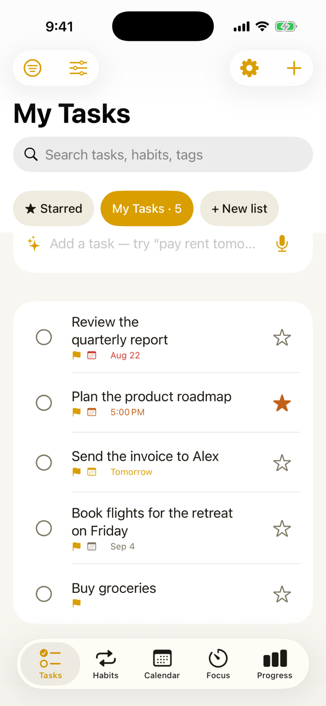
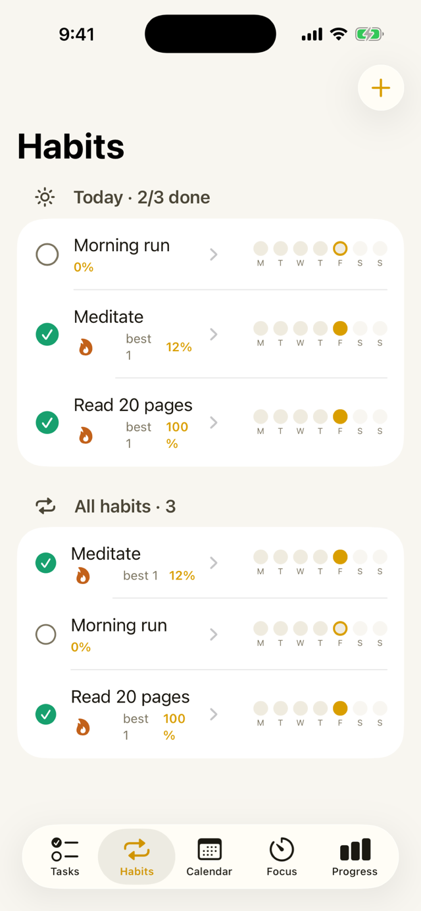
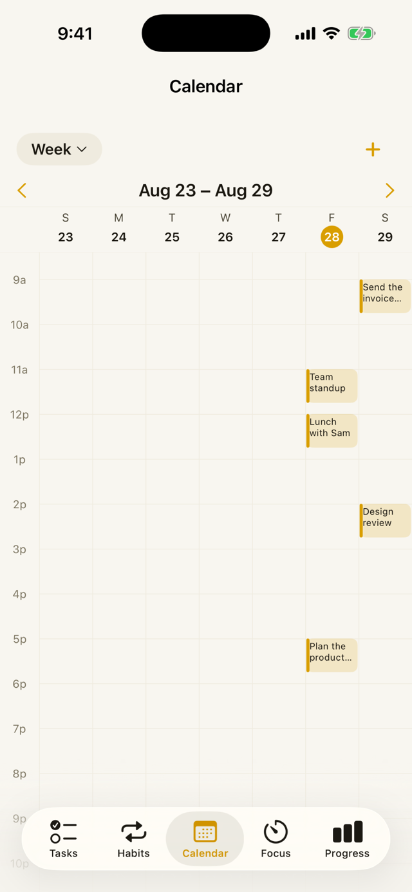
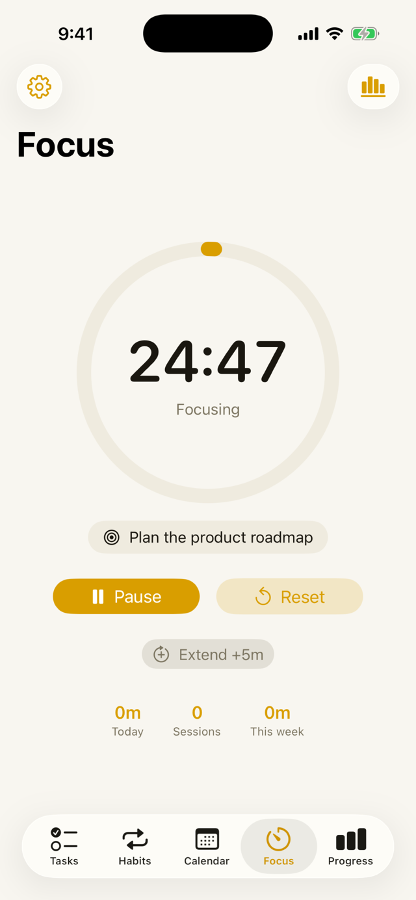
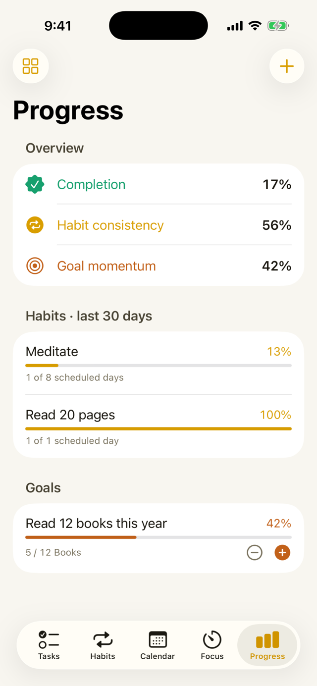

Everything in one place
One app for the whole day.
Tasks, habits, focus, calendar, priorities, and goals — designed to work together, and to stay entirely on your iPhone. No account, no ads, nothing collected.
Tasks that stay out of your way
Type or dictate "call the dentist tomorrow at 2pm" and it's scheduled. Lists, tags, priorities, subtasks, and due dates color-coded by urgency — overdue, today, tomorrow, later.
Habits that stick
Daily, weekly, or specific-day schedules. Streaks and consistency over the last 7, 30, or 90 days, and one-tap check-ins from the app or a widget.
Deep focus
A Pomodoro-style timer with short and long breaks, a live countdown in the Dynamic Island and on the Lock Screen, and focus time that adds up per task or habit.
Calendar, both ways
Day, week, and month views. Tap an empty slot to create a task right there. Two-way sync with Apple Calendar — move something in either app and the other follows.
The Eisenhower matrix
Sort everything by urgent and important, and see at a glance what to do first, schedule, delegate, or drop.
Progress you can feel
Completion, habit consistency, and goal momentum at a glance. Track goals with targets and units — books read, miles run, anything.
A look inside
Calm by design.





Free on the App Store
For iPhone, iOS 17 or later. Home Screen widgets and Siri Shortcuts included.